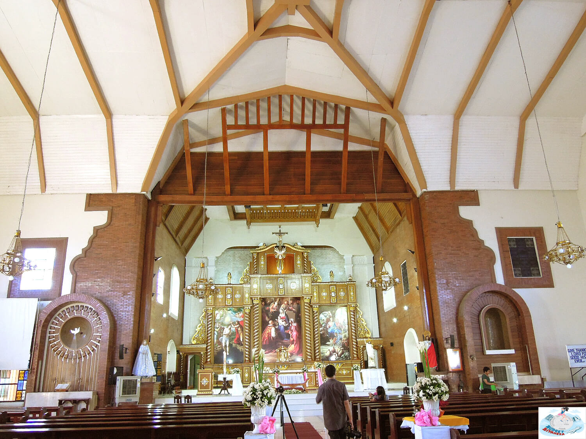
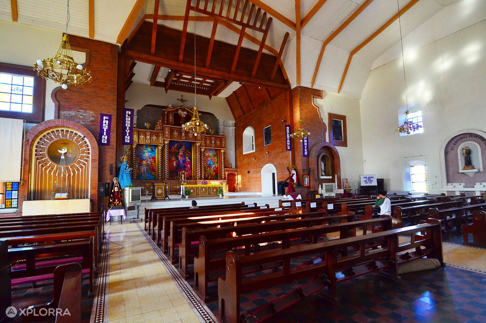
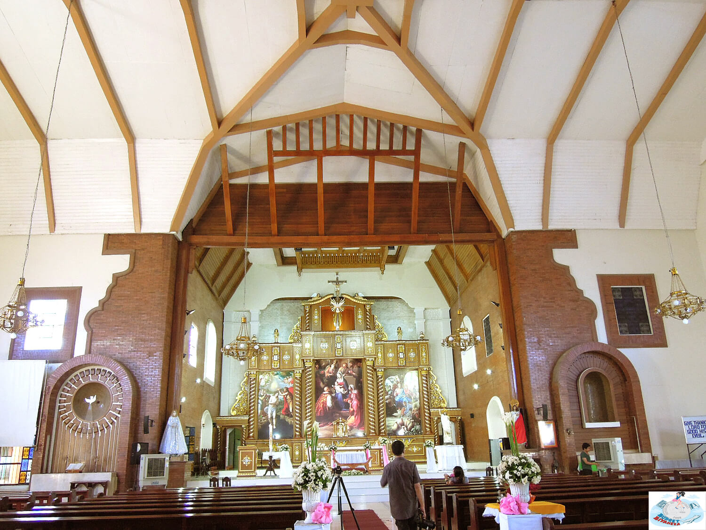
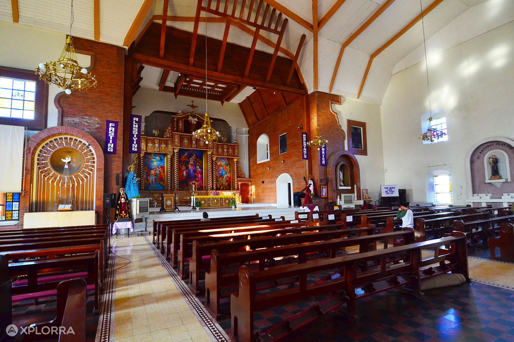

Epiphany of Our Lord Parish Church

The Parish Church of Epiphany of Our Lord, formerly Three Kings Parish Church, is a Roman Catholic church located in Lingayen, Pangasinan in the Philippines. It is the co-cathedral of the Roman Catholic Archdiocese of Lingayen-Dagupan. The church was founded in 1587, the same year as the Saint Dominic de Guzman Parish Church in San Carlos, Pangasinan.[1]
The municipality of Lingayen, Pangasinan was founded by Spanish Augustinian missionaries in 1614. The parish was established in 1616 and named it Los Tres Reyes or The Three Kings. By 1740, the parish was under the care of the Dominicans until the Filipino revolt against the Spaniards took place in 1898. From 1900 to 1933, Filipino priests took charge of the parish until the Columban missionaries from Ireland came to the province. In 1939, the Columban Sisters arrived to serve in the catechetical apostolate in public schools.
The diocese of Lingayen, Pangasinan was transformed into an archdiocese on February 16, 1963, naming it Archdiocese of Lingayen-Dagupan and the church became known as The Three Kings Co-Cathedral. The Most Reverend Mariano A. Madriaga was promoted as the first archbishop of Metropolitan See was Most Reverend Mariano A. Madriaga. In the same year, the Bishop’s Palace was reconstructed and later became Saint Columban’s College. The church reopened in 1965 and was named Parish of the Epiphany of Our Lord.
During the term of the first Team Ministry, the parish adopted the name Epiphany of Our Lord Parish. The change of the centuries-old church bells dating back 1800's was done and displayed outside the cathedral. The second Team Ministry led various church renovation projects.
 


